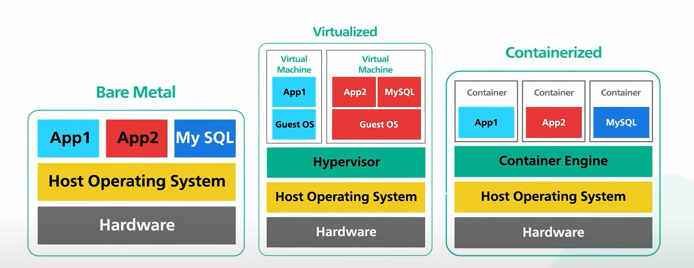
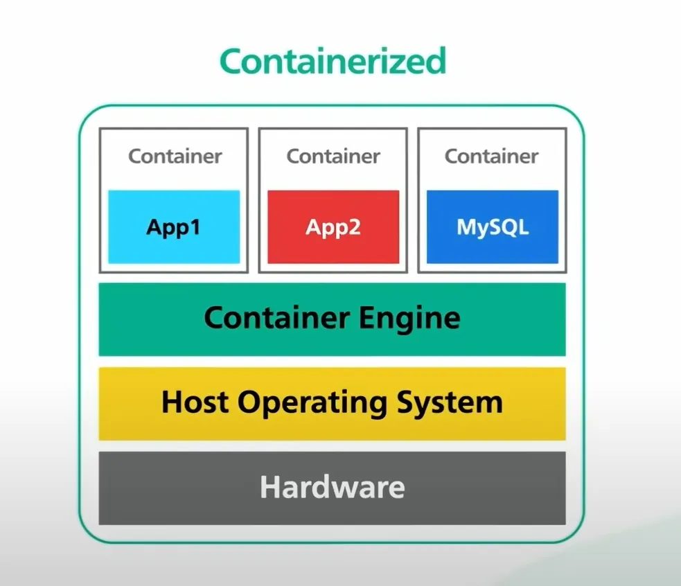

Conteneurisation
🐳 Docker
INTRODUCTION
Qui connaît Docker ?
Qui l'a déjà utilisé?
Contexte & cadre général
🔴 Problématique 1
Ca marche sur mon poste !
Un dév pas fort malin
Ok ! Alors emballe ton poste, on l'envoie au client
Son chef de projet
=> problème liés à l'environnement et/ou aux données
🔴 Problématique 2
Bataille entre Dev et Ops lorsque la MeP a foiré (et le rollback aussi)
=> problème de dépendances, et parfois de compétences transverses
🔴 Problématique 3
Ca rame... met plus de RAM !
Un dév en panique
Historique
Avant le commencement des temps, il y avait le Kube
Optimus prime
Bah en fait non !
Historique
Docker a révolutionné le déploiement
⚖️ Comparaison
Principe fondamentaux
- Communication avec le kernel (Linux OU Windows)
- Isolation processus
- Isolation réseau
- Runtime alternatif : CRI-O, Containerd, runc, ...
Docker en détail
Images, Dockerfile, et commandes essentielles
Composants
Le runtime de Docker est open-source (mais pas le reste)
- Docker client & docker daemon
- Docker Host
- Interface graphique => Docker desktop (pas open-source...) et Lazydocker
- Possibilité de faire tourner des conteneurs Linux (la plupart des conteneurs) sous windows via WSL
Architecture

Docker host & network

Run
# Permet de lancer un conteneur
docker run ${repository/image}
docker run hello-world
docker run -it --rm -p 8000:8080 --name aspnetcore_sample mcr.microsoft.com/dotnet/samples:aspnetapp
docker run -d --rm -p 8000:8080 --name aspnetcore_sample mcr.microsoft.com/dotnet/samples:aspnetapp
# Permet de voir les conteneurs qui tourner
docker ps -a
# Permet d'afficher les logs de la sortie standard du conteneur
docker log ${SHA du conteneur}
# Permet de se connect en mode termnial au conteneur
docker exec -it ${SHA du conteneur} cmd
# Permet de stopper un conteneur
docker stop ${SHA du conteneur}
Démo time
Pour plus d'info
docker --help
Build
Image docker ⇒ image ≠ conteneur
Dockerfile
Docker build
Multi-stage build => Build X / Bake
Docker registry => docker Hub
Bonus : lien avec VS => hot reload
Dockerfile
tagDockerfile
# Permet de lancer un conteneur
Dockerfile avancé
# Permet de lancer un conteneur
Pour plus d'info
Orchestration
Du single conteneur à la stack complète
Docker compose
un peu d’historique c’est faire une stack docker-compose.yml + overrides fichier .env notion de volume notion de networkdocker-compose.yml
# Permet de lancer un conteneur
Démo time
# Permet de lancer une stack
docker compose up -d
# Permet d'arrêter une stack
docker compose down
docker compose down --rmi all
# Permet de juste build des images
docker compose build
# Bonus : nettoyer son système
docker image prune -af
docker system prune -af
Pour plus d'info
Et le Kube ?
Docker Swarm
Kubernetes
Bonus : CNCF Landscape
Pour aller plus loin...
Bénéfices
- stacks ISO entre dev et prod
- facilité d’onboarding
- facilité de travail sur plusieurs versions
- facilité de travail inter-équipe
- facilité de debug
- facilité de déploiement pour les QA
- MeP plus sereine avec des déploiement blue-green
- Renforce la culture DevOps
A vous de jouer !
Formation KodeKloudBonus : vous pouvez l'utiliser pour des projets perso chez vous !
Et maintenant ?
Suite des travaux prévus
Adaptation de vos workflows
Conclusion
TL;DR
- Forme toi !
- Installe Docker sur ton poste via le script d'installation (Solution GC/build/local)
docker compose up -d- Teste que tout fonctionne bien
- Happy coding !!!
Merci ! 🙏
Des questions ?
Et réponses (si vous êtes sages)